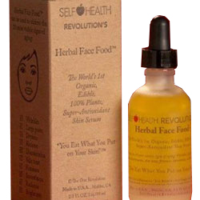
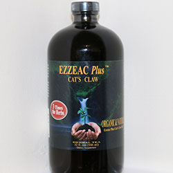

Reishi Tea The perfect blend of Reishi, Chaga, Shilijit and Ormus, this lush elixer is earthy and calming.
Add to cart $45.95

Herbal Face Food The most pure, most powerful and most potent anti-aging serum ever created.
Add to cart $94.00
Or take advantage of our monthly auto-ship for monthly no-hassle deliveries. Add to cart $94.00/month

Ezzeac Plus Herbal Tea with Cat's Claw Based on the original Ojibwe recipe, 100% natural and organic.
Add to cart $43.95

Vitamin D3 Support immune system with healthy cell growth.
Add to cart $20.00
Probiotics A probiotic and FOS supplement to support digestive tract health.Add to cart $40.00
Cleanse A dietary supplement to support G.I. balance and colon health.
Add to cart $40.00 SALE!! $34.97